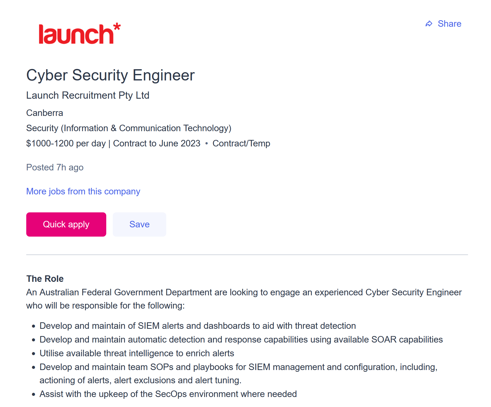

Upon searching for my ideal position on Seek, I quickly found the position of a Cyber Security Engineer for a department of the Australian Federal Government. (click the image)
This position is one that I have imagined enjoying for a long time. I believe it to be the development, maintenance, and usage of the security system for the company or organization, protecting the company against threats such as hackers. My fascination for a position such as this began from watching Mr. Robot at an impressionable age, where the protagonist describes himself as a ‘cyber security engineer’ (Esmail, 2014). This led to researching the position to discover that it would be a role I believe I would enjoy.
The role requires a vast array of qualifications and a deep understanding of networks and cybersecurity systems, including setting up automated security systems through SOAR, as well as responding to threats manually through SIEM alerts. The threats made can be utilised to build stronger framework for the security systems, preventing further attacks with the same method. This however is far beyond my capabilities as of now, as my current capabilities include basic html understanding, extremely basic python knowledge, and standard usage of control panel, network troubleshooting and command prompt. To reach these qualifications, field experience through graduate positions will assist in developing understanding of the skills required. This, as well as the numerous certificates available and a masters of cybersecurity on top of the Bachelors of Information Technology will provide me with what I believe to be the capabilities to begin at a position similar to this.